Photo Gallery
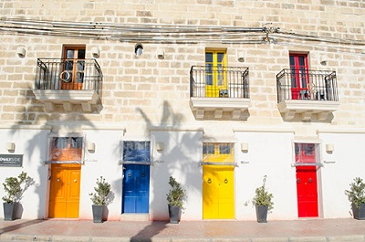
 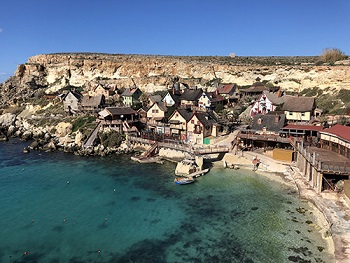
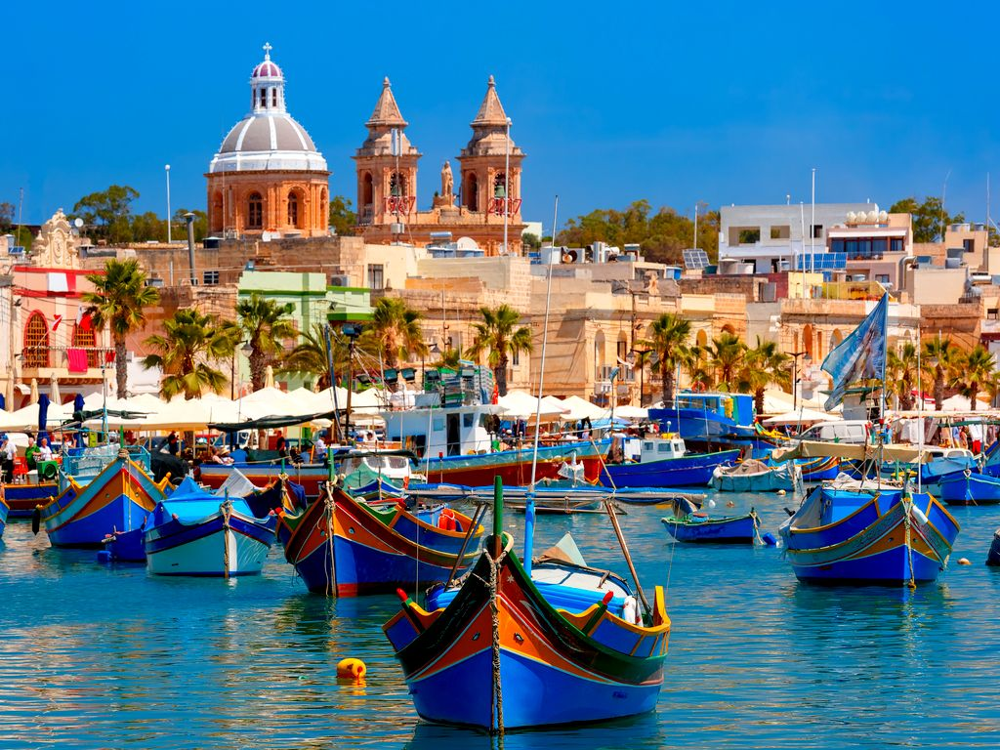
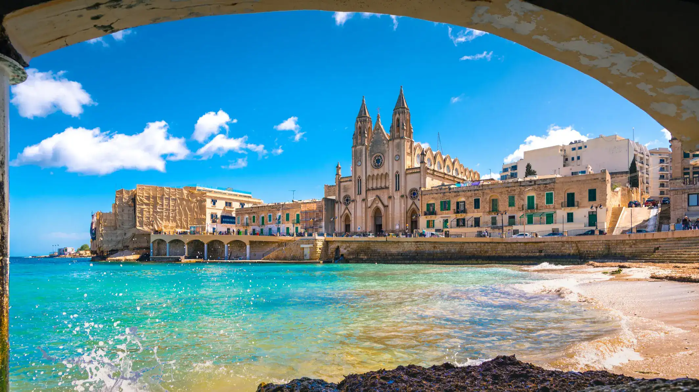
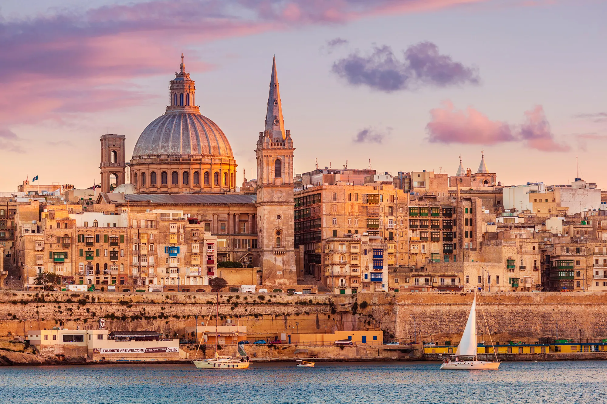
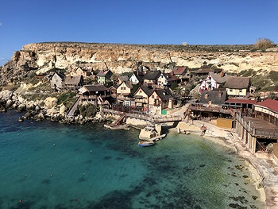
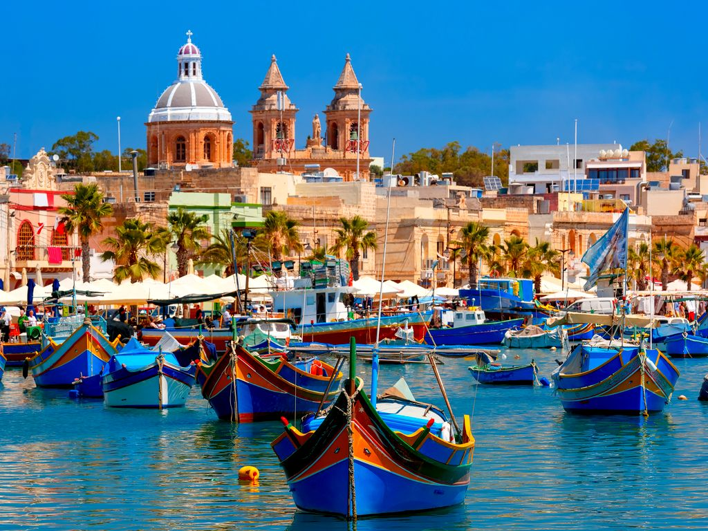
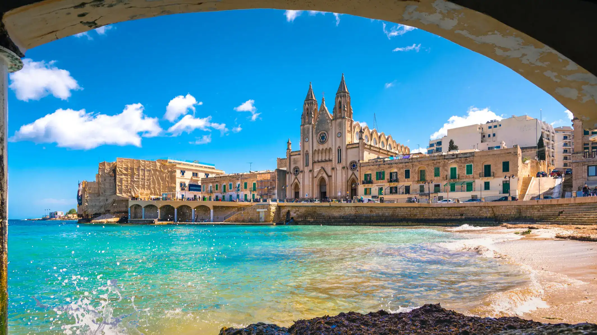
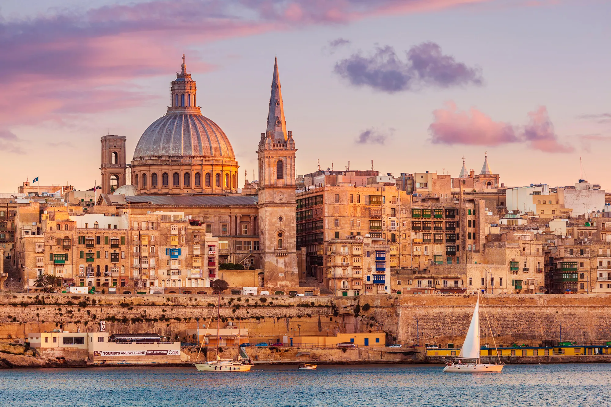
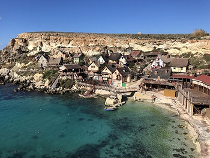
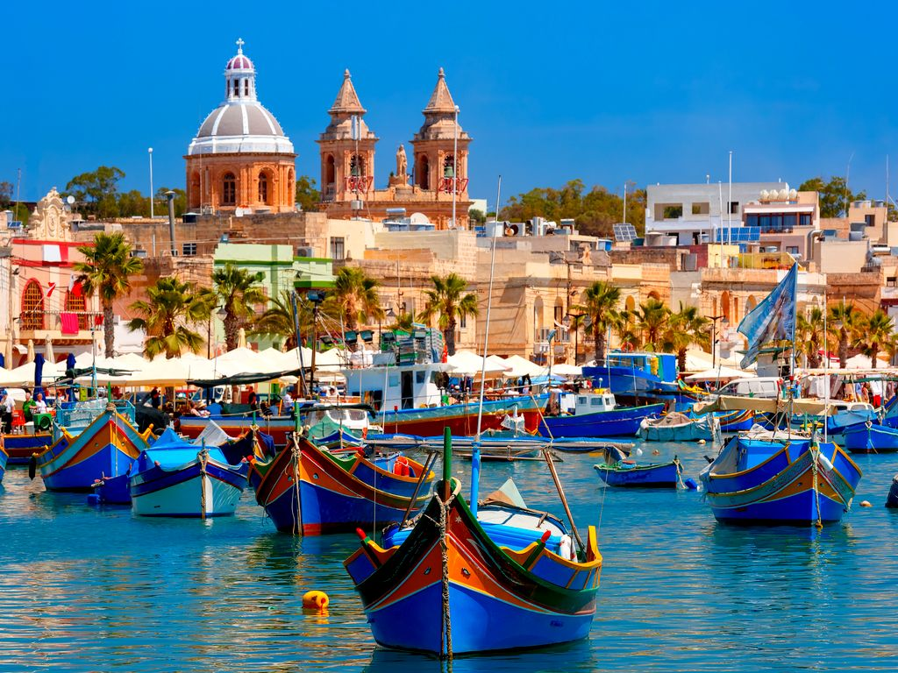
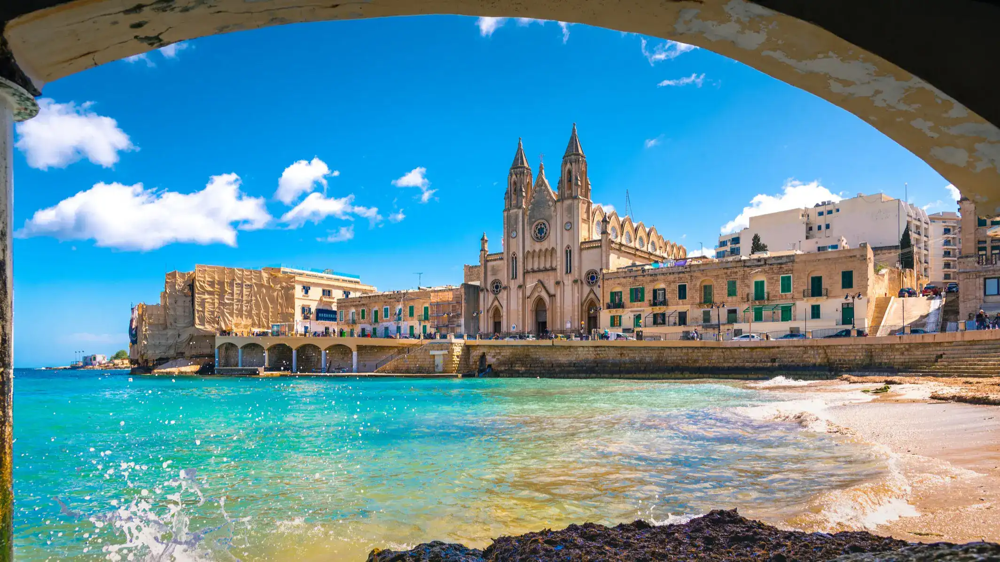
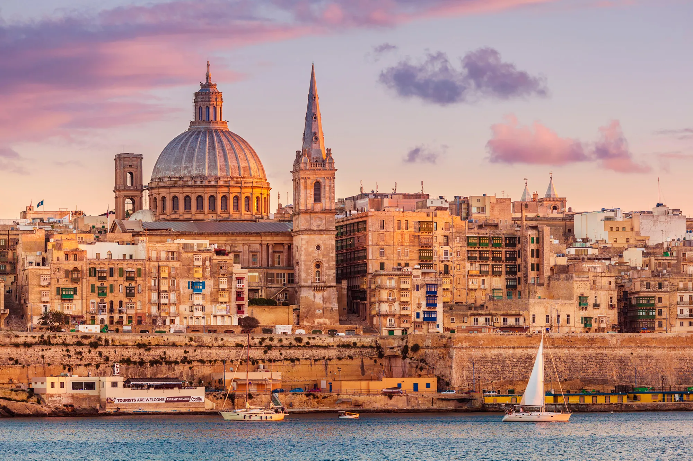
Malta is a small island off the coast of Italy. Malta floats alone in the middle of the Mediterranean Sea. Here the official language is English. Malta is known for its narrow streets, Italian food and unpredictable weather.
A must-see is Popeye Village. This is the set for the 1980 film. There you can feel like a real movie hero.
Famous for its crystal-clear waters, ideal for swimming and snorkeling.
A traditional fishing village with colorful boats and a vibrant Sunday market.
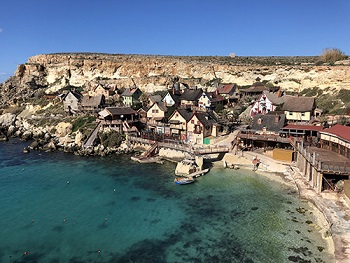
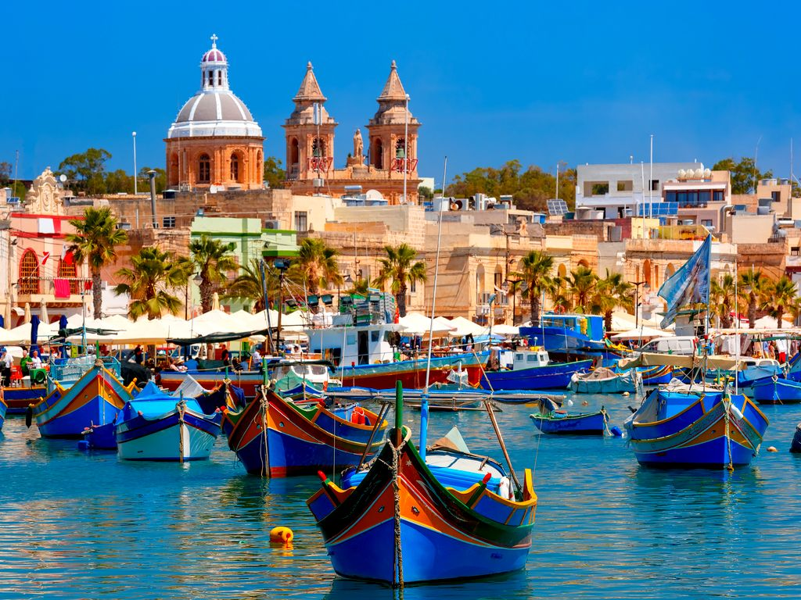
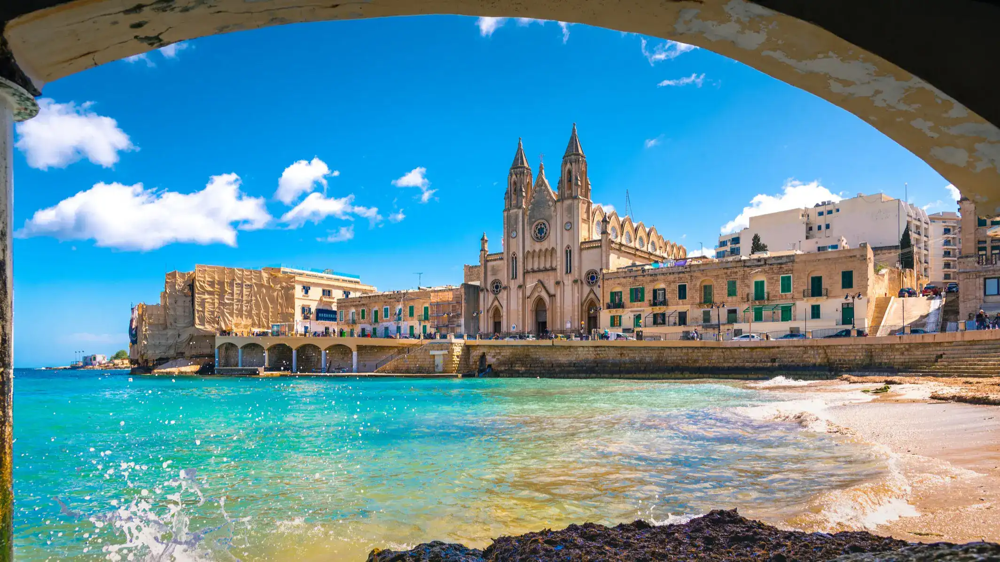
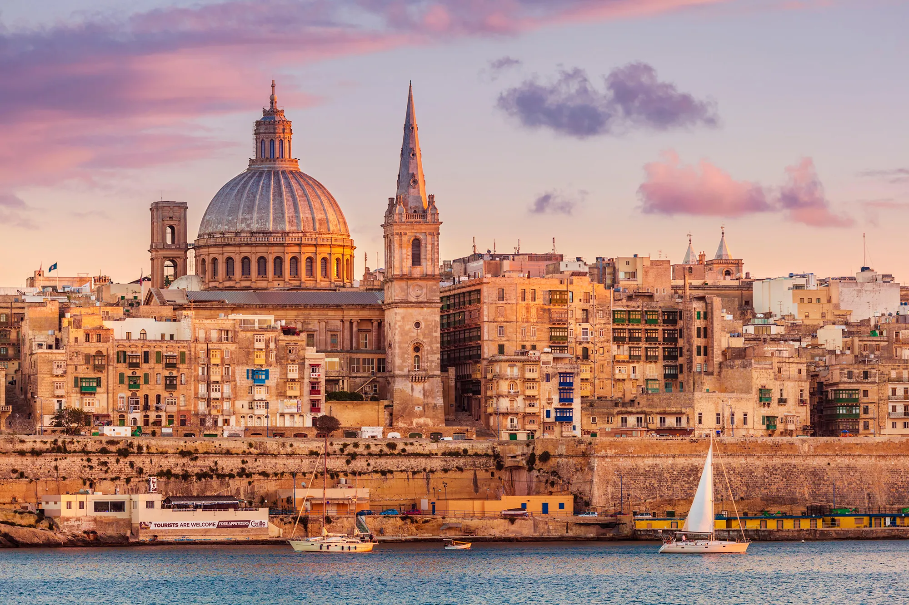